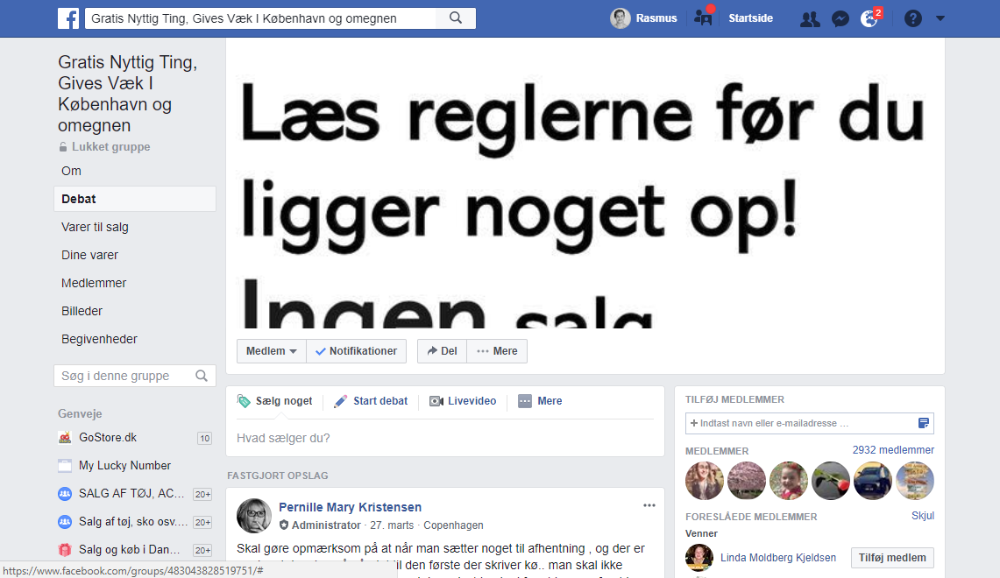

Problemstillingen
Problemstillingen på vores nuværende situation er kort og simpelt: Der er generel pladsmangel i de fleste hjem mht. deres tøj-opbevaring. Ud fra vores interviews og udspørgelser kan vi konkludere, at mange har en masse gammelt tøj som de ikke ønsker at bruge/gå i længere. Derudover fik jeg en del udtalelser om, at det ikke kun er tøj som folk har alt for meget af - det er ting generelt.
Hvordan kan vi få lavet en løsning, der kan fikse folks problemer mht. at komme af med deres gamle tøj? Hvilken platform skal løsningen udføres på?

Konklusionen
Ud fra vores fælles afstemning på whiteboardet, kan vi konkludere, at de fleste mente at løsningen på pladsmanglen ville være at donere/sælge det overskydende tøj. Folk nævner også at de heller ikke kan finde nogle generelle "regler" for, hvad der er okay at sende til genbrug/videresælge, og derfor ikke vil stå i en pinlig situation. Et andet problem kunne være at der ikke umiddelbart findes ikke en nem nok løsning til, at folk gider bruge tiden på at smide til genbrug/videresalg.
Løsningen
Faktum er, at der findes over 10+ Facebook sider/grupper hvor folk giver væk - problemet ved dette er, at der skal man simpelthen klikke/søge for meget rundt på Facebook, samt ansøge om medlemskab og derved vente yderligere på at komme af med noget man måske tænker at smide ud samme dag.
En løsning på problemet kunne være en app som generelt fungerede som online billboard af gratis ting, som folk kan komme af med. Man kunne opsætte en GPS/Maps funktion hvor man kunne søge efter ting der var inden for en specifik radius (km) og derved ville man ikke kunne se de ting der blev slået op i eks. Jylland hvis man boede på Sjælland og omvendt. Derudover kunne man have div. kategorier (køkken, stue, bad osv.) så man kunne specificere yderligere hvad man ledte efter.